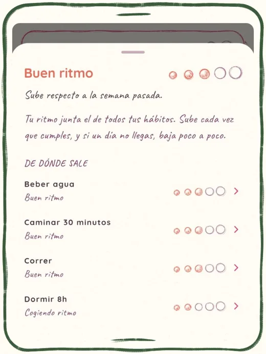
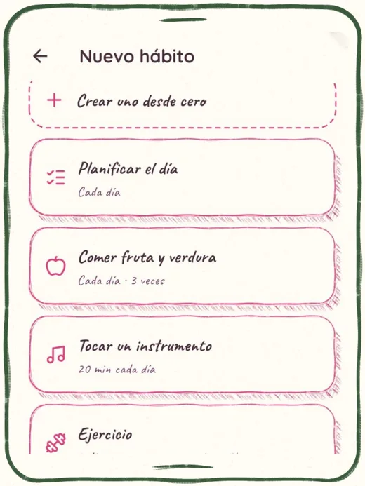

Sin rachas que se rompen
Si un día no llegas, el ritmo baja poco a poco. No hay rojo ni avisos de culpa.
 Norday
Descargar
Norday
Descargar
Si vas a escribir sobre Norday Habits, aquí tienes lo básico. Para cualquier otra cosa, escribe a hola@norday.app: contesta Quim.
La app de hábitos sin presión, con una mascota que crece contigo, dibujada a mano y en español. Gratis.
Si un día no llegas, el ritmo baja poco a poco. No hay rojo ni avisos de culpa.
De huevo a cría y a adulto con cada hábito. Se pone triste si te vas y se alegra cuando vuelves.
Tres identidades (Profundidad, Neotokyo+ y Dulce) y las ideas de libros que Nori cuenta cada semana.
Puedes usarlas para hablar de Norday Habits. Si necesitas otro tamaño o el logo en vectores, pídelo por correo.



